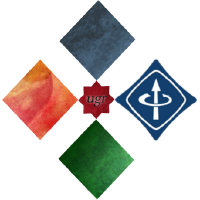

Israel Blancas

Nací (y resido) en Granada (España) -tierra de la Alhambra y mil cosas más-.
En 2015 finalicé mis estudios en Grado de Ingeniería Informática en la Escuela Técnica Superior de Ingenierías Informática y Telecomunicación de la Universidad de Granada.
Actualmente me encuentro haciendo una beca en el grupo de investigación Geneura.
Si estoy en alguna red, puedes encontrarme como "iblancasa" (que viene de unir partes de mi nombre "Israel Blancas Álvarez" -aunque tengo que reconocer que parece el nuevo producto de Apple-).
Soy organizador de Google Developers Group Granada y miembro de la rama estudiantil de IEEE en la Universidad de Granada.
Me encanta todo lo relacionado con las nuevas tecnologías, desarrollo de software, "cacharreo" y similares.
Cosas en las que estoy trabajando o he trabajado recientemente
Colaboro con el grupo de investigación Geneura.
Pretendemos conocer qué lenguajes de programación son mejores para realizar algoritmos genéticos, implementando algunas operaciones básicas utilizadas en algoritmos evolutivos y después medimos tiempos de ejecución (aumentando el tamaño del chromosoma cada cierto número de iteraciones).
He colaborado principalmente en la implementacion de los operadores en algunos lenguajes (Python, Dart, Kotlin, Pascal y Julia -también hubo una implementación en bash, pero fue desestimada por su lenta ejecución-).
Estas son las publicaciones (en las que he colaborado) realizadas sobre este tema:
Como colaboración a un proyecto del grupo de investigación Geneura.
Me encuentro estudiando de qué forma distinos materiales afectan a la intensidad de señal de las ondas WiFi para conocer mejor qué materiales provocan una mayor o menor atenuación.
En el futuro, se pretende realizar una publicación sobre este estudio.
A partir de un script adaptado por Juan Julián Merelo Guervós el cual creaba rankings de los usuarios de GitHub dada una localización, en función del número de contribuciones que tuvieran, se empezó a trabajar en el estudio de las distintas comunidades de desarrolladores (principalmente en España).
Colaboré en la publicación Measuring the local GitHub developer community. CoRR abs/1501.06857 (2015).
Por otra parte, también colaboré en la inserción de nueva funcionalidad al script realizado por J. J. Merelo y actualmente me encuentro desarrollando una versión del mismo para el lenguaje de programación Python (la intención no es otra que la de facilitar la inserción de nuevas funcionalidades en un lenguaje de programación más sencillo y también más utilizado que el que sea usa en la actual versión del script, Coffeescript).
En el futuro, se pretende crear nuevas publicaciones sobre este tema.
Pretendo desarrollar una plataforma de software libre mediante la cual los gestores de bandas de música puedan administrar todo lo que necesiten: desde partituras hasta los datos de los componentes.
Actualmente solo cuento con el diseño del sistema.
Sobre mí

Como ya he dicho en la página principal, mi nombre es Israel Blancas y soy de Granada (España). Mi apodo es @iblancasa en todas las páginas en las que me registro.
- 2010-2015: Grado en Ingeniería Informática - Universidad de Granada
Otros cursos
- Marzo 2016 - Abril 2016 - Ciencia de datos: un enfoque práctico en la época del big data - Centro Mediterráneo (Universidad de Granada)
- 2015-2015: Becario de "Iniciación a la Investigación" por el Plan Propio de la Universidad de Granada con el grupo de investigación Geneura
- 2016:
- 2015:
Premios
- "IV Desafío Tecnológico (Reto RTI)" (2014-2015) - Primer premio - Organizado por la ETSIIT de la UGR
Consistía en el desarrollo y prototipado de un sistema de vídeo en tiempo real, distribuido y multiagente utilizando la tecnología "RTI Connext DDS". En nuestro caso, creamos un sistema que permitía que los padres de los alumnos de un centro educativo pudieran ver a sus hijos desde casa. - Hackathón Sinfonier (2016) - Primer premio - Organizado por ElevenPaths
Creación de módulos y topologías en la plataforma "Sinfonier". Desarrollé cuatro módulos (todos ellos validados) para la extracción de datos de Linkedin y Archive.org y diseñé una topología para enviar ofertas de trabajo a usuarios de GitHub en función de sus habilidades. - Campus inWatch (2015) - Segundo premio - Organizado por Global InDevices
Desarrollo de una aplicación para el smartwatch "Android" "inWatch Z". Mi grupo creó un prototipo de una aplicación para ayudar a dejar de fumar.
Más cosas sobre mí
Asociaciones de las que soy miembro

Asociaciones de las que soy miembro
Google Devevelopers Group Granada es una asociación sin ánimo de lucro de desarrolladores interesados en tecnología, sobre todo la que se encuentra estrechamente relacionada con Google. Nos encargamos de organizar eventos para crear comunidad y difundir conocimiento.
Soy miembro desde noviembre de 2015.
En este año estamos organizando el CNR (Congreso Nacional de Ramas) 2017 (que será en Granada).
Miembro desde septiembre de 2015.
Algunas aficciones
- Programar (cómo no)
- Internet de las Cosas
- Cloud
- Escuchar música
- Salir con amigos
- Jugar al futbolín